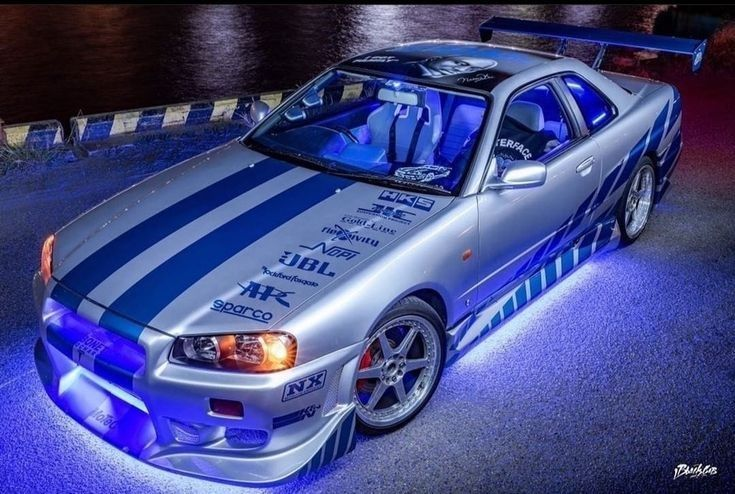
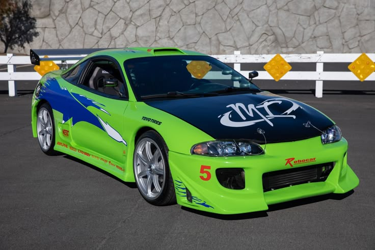

|
FAMILY |
Машины Доминика Торетто
1970 Dodge Charger R/T

Если говорить о его автомобилях, то фирменный автомобиль Дома в «Форсажной саге» — это чёрный Dodge Charger R/T 1970 года.
Построенный Домом и его отцом, он появился в «Форсаже», «Форсаже 2», «Форсаже 5» и «Форсаже 7», где был уничтожен, когда Дом
столкнулся с Декардом Шоу в Лос-Анджелесе. Судя по тому, как Dodge Charger R/T 1970 года выглядит в убежище в F9, Дом починил
машину после Форсажа 7. Он также пригнал её в Форсаж X.
Chevrolet Chevelle SS 1970 года

Чтобы не отставать от других машин, на которых ездит Дом в «Форсаже», в финальных титрах «Форсажа» показано,
как Дом уезжает из Лос-Анджелеса на красном «Шевроле» в Нижней Калифорнии, Мексика. Машина вернулась в «Форсаже»,
когда Дом приехал домой на похороны Летти. Позже Дом отшлифовал машину, перекрасил её в серый цвет и взорвал, пытаясь
отомстить за «смерть» Летти и её последующее воскрешение в нескольких сиквелах
2009 Dodge Challenger SRT-8

Дом купил «Челленджер» в Испании, и позже мы видим, как он участвует в гонках с Брайаном в конце «Форсажа 5»,
празднуя их успешное ограбление. В следующем фильме, «Форсаж 6», Дом и Брайан снова участвуют в гонках на тех же
двух машинах. Судьба машины на данный момент неизвестна в «Форсажной саге». Из всех автомобилей, на которых ездит
Дом в «Форсаже», Dodge Challenger SRT-8 2009 года — самый новый. Challenger с двигателем V-8 развивает максимальную
мощность в 425 лошадиных сил и крутящий момент в 420 фунт-футов. Его ретро-стиль, безусловно, напоминает об эпохе
маслкаров, а заниженная подвеска обеспечивает превосходное управление.
Машины Брайана О'Коннера
Toyota Supra Mark IV 1994 года

Из всех машин Брайана его первым фирменным автомобилем стала Toyota Supra. После того как Джонни и Лэнс разбили его
Mitsubishi Eclipse, ему понадобился автомобиль, чтобы отплатить Дому (он был должен Дому десятисекундную карту).
Брайан нашёл на свалке ржавую Supra. Это ярко-оранжевая Toyota Supra Mark IV 1994 года. Команда Дома помогает ему
починить её, и Брайан использует её в ключевых моментах до конца «Форсажа».
Nissan Skyline R34 GT-R 1999 года

Брайан впервые приобрёл Nissan Skyline в «Прелюдии с турбонаддувом», действие которой происходит до «Двух быстрых
и яростных». Этот фильм представляет собой шестиминутную короткометражку, которая связывает два полнометражных
фильма. В короткометражке он уезжает из Лос-Анджелеса до того, как полиция Лос-Анджелеса успевает его арестовать,
и, пока его разыскивает вся страна, Брайан выигрывает уличные гонки, чтобы заработать денег. После того как он
бросает свою Supra, когда за ним начинает охоту ФБР, ему приходится искать новую машину. Он покупает бирюзовый
Nissan Skyline GT-R R34 в дилерском центре, а затем тюнингует его по своему вкусу. Затем он модифицирует его и
отправляется в Майами, попутно выигрывая новые гонки. В начале «Форсажа 2» он участвует на этой машине в мероприятии,
организованном Теджем. Он быстро теряет её, когда она оказывается на штрафстоянке после задержания Брайана сотрудником
таможенной службы США. Даже когда он соглашается сотрудничать с правоохранительными органами, ему приходится искать новую
машину.
Mitsubishi Eclipse 1995 года

Брайан впервые приобрёл Nissan Skyline в «Прелюдии с турбонаддувом», действие которой происходит до «Двух быстрых и яростных».
Этот фильм представляет собой шестиминутную короткометражку, которая связывает два полнометражных фильма. В короткометражке он
уезжает из Лос-Анджелеса до того, как полиция Лос-Анджелеса успевает его арестовать, и, пока его разыскивает вся страна, Брайан
выигрывает уличные гонки, чтобы заработать денег. После того как он бросает свою Supra, когда за ним начинает охоту ФБР, ему
приходится искать новую машину. Он покупает бирюзовый Nissan Skyline GT-R R34 в дилерском центре, а затем тюнингует его по
своему вкусу. Затем он модифицирует его и отправляется в Майами, попутно выигрывая новые гонки. В начале «Форсажа 2» он участвует
на этой машине в мероприятии, организованном Теджем. Он быстро теряет её, когда она оказывается на штрафстоянке после задержания
Брайана сотрудником таможенной службы США. Даже когда он соглашается сотрудничать с правоохранительными органами, ему приходится
искать новую машину.
Машины Летти Ортис
Nissan 240SX 1997 года

На протяжении всего фильма «Форсаж» Летти в основном ездила на модифицированном Nissan 240SX.
Опытный водитель и знающий механик с самого начала была членом команды Дома. Летти не только ездила
на красном Nissan с жёлтой графикой по Лос-Анджелесу, но она также использовала этот автомобиль для
участия в «Гонках на выживание». Летти легко обошла своего соперника, воспользовавшись закисью азота,
которой славилась команда Дома. Было неясно, что случилось с «Ниссаном» Летти, поскольку он больше не
появлялся во франшизе.
1970 Plymouth Road Runner

Когда Дом переехал в Доминиканскую Республику в «Форсаже», он и его команда начали угонять бензовозы.
Во главе группы была его девушка Летти, но когда полиция начала их преследовать, команда распалась. Тем
временем Летти связалась с Брайаном и стала двойным агентом под руководством Артуро Браги (Джон Ортис),
опасного криминального авторитета. Приспешники Брагаа, Феникс (Лаз Алонсо), заметили это и погнались за
«Плимутом Род Раннер» Летти, столкнув его с дороги. Погоня результатировала в том, что машина Летти
несколько раз перевернулась, прежде чем её подожгли Фениксом.
Jensen Interceptor 1971 года

После того как Летти попала в серьёзную автомобильную аварию по вине Феникса, у неё развилась тяжёлая амнезия.
Она не помнила, как была связана с Домом или его командой, поэтому присоединилась к Оуэну Шоу (Люку Эвансу) в
«Форсаже 6». Пока группа Оуэна использовала специальный автомобиль Flip Car для ограблений в Лондоне, Дом решил
остановить антагониста. Последователи Оуэна попытались помешать контратаке Дома, и среди них была Летти на сером
«Дженсен Интерцептор». Машина для гонки против Дома и его «Додж Чарджер Дайтона».
Машины Мии Торетто
Acura Integra GS-R 1994 года

В фильме «Форсаж» были показаны две Acura Integra, за рулём одной из которых была Миа. Её машина, в частности, была синей
Acura Integra GS-R 1994 года выпуска, в отличие от красно-жёлтой модели DC2 Эдвина. Сблизившись с Брайаном, Миа использовала
машину, чтобы продемонстрировать свои навыки вождения, а также подвезти его до места работы под прикрытием. К концу фильма машина
была в хорошем состоянии, но в сиквелах она не появлялась.
Acura NSX 2003 года

Чёрная Acura NSX, за рулём которой была Миа, появилась в двух частях фильма, а также в захватывающей концовке «Форсажа»,
которая была раскрыта в «Форсаже 5» в первой сцене. Когда Дома приговорили к 25 годам заключения, его перевозили в тюрьме.
Миа вместе с Брайаном, Лео и Сантосом решили угнать автобус, чтобы освободить Дома. В ходе нападения Миа использовала свою
машину, чтобы заставить автобус свернуть, а затем Брайан столкнул его с дороги. Автомобиль производства Honda больше никто не видел.
Ford GT40 1965 года

В начале «Быстрой пятёрки» Миа, Брайан и Дом согласились помочь Винсу угнать три автомобиля, конфискованные Управлением по борьбе
с наркотиками, прямо из движущегося поезда. Когда один из приспешников наркобарона Эрнана Рейеса проявил интерес к синему Ford GT40,
Дом приказал Мие ехать прямо к их убежищу. Оказалось, что в машине находился важный компьютерный чип с информацией о преступной империи
Рейеса. Люк Хоббс и DSS позже завладели автомобилем, проникнув в убежище..
Остальные машины
Хан Лю — Toyota Supra 2020 года

Одним из «Форсажа 9»самых больших сюрпризов стало возвращение Хана. После того как его машина превратилась в
гигантский огненный шар вместе с ним внутри в «Токийском дрифте», казалось, что он погиб навсегда, когда «Форсаж»
догнал события. Хотя Хан снова появился на экране в «Форсаже 5» и «Форсаже 6», эти фильмы происходили в прошлом.
В «Форсаже 9» Хан возвращается навсегда и с новым автомобилем. В F9 Хан ездит на чёрно-оранжевой Toyota Supra 2020
года, цвета которой напоминают Mazda RX-7 1997 года, на которой Хан ездил в последний раз.
Роман Пирс — Jeep Gladiator 2020 года

Роман, верный помощник Дома, ездит на Jeep Gladiator 2020 года выпуска. Этот совершенно новый пикап среднего
размера отлично подходит для езды по бездорожью в джунглях и по пересечённой местности. Jeep Gladiator может
буксировать почти в два раза больше, чем Wrangler, у него огромные внедорожные шины и другие особенности, включая
запасное колесо на крыше, металлические бамперы, переднюю лебёдку и приподнятую подвеску. Такой служебный автомобиль
необходим в связи с растущей сложностью схем, используемых командой Торетто.
Миа Торетто — Chevrolet Nova SS 1974 года

После трагической гибели того самого«Форсажа»Пола Уокера в 2013 году казалось, что Миа Торетто не вернётся в «Форсаж».
Однако младшая сестра Дома снова появляется в «Форсаже 9», на этот раз за рулём Chevrolet 1974 года. Модель 1974 года
получила новую решётку радиатора с узором в виде мелкой сетки и парковочные огни, расположенные внутри фар.
Тедж Паркер и Роман Пирс — кастомный Pontiac Fiero

Попадая в категорию «не пытайтесь повторить это дома», F9 видит, как Роман прикрепляет ракету к своему «Понтиаку Фиеро»
и запускает себя и Теджа в космос, чтобы помешать Джейкобу контролировать все устройства, работающие на программном коде.
Это может показаться преувеличением, но в том же фильме Дом использует свою машину как рогатку, чтобы спасти Летти в воздухе
и благополучно приземлиться в конце. В конце концов, если они собираются уничтожить машину, то пусть это будет старый Fiero, а
не недавно тюнингованный автомобиль.
Тедж Паркер и Роман Пирс — Acura NSX 2018